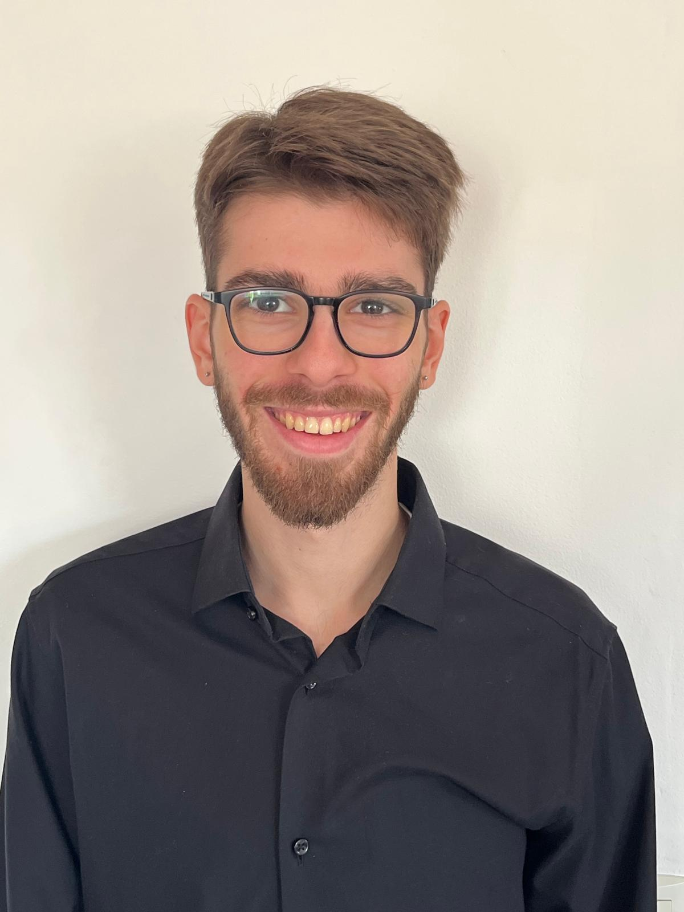

Hugo Testut
Né le 14 Octobre 2005
23 Route de Nîmes - 30190 - Saint Geniès de Malgoirès
Tel : +33 6 12 57 15 50
Mail : hugo.testut@gmail.com
Permis B

2026-2028
2023-2026
2020-2023
2016-2020
Faculté des Sciences - Licence EEA
2ème année.
IUT de Nîmes - BUT GEII filière ESE
Spécialités Electronique et Systèmes Embarqués.
Lycée Dhuoda - BAC Scientifique Général
Spécialités Physique-chimie, NSI, Mathématiques complémentaires
Collège Frédéric Desmons
Brevet des collèges
03/26 - 08/26
(6 mois)
10/25 - Présent et 11/24 - 3/25
(5 mois)
En cours
(Contrat étudiant)
04/25 - 07/25
(3 mois)
07/22 - 07/22
(1 mois)
12/20 - 12/20
(1 semaine)
Trad Test & Radiations
Stage de 3ème année à l'IUT
Développement et amélioration des librairies Python d'instrumentation (spatial/défense)
Tutorat
Tuteur pour révision de cours ou préparation aux examens des 1ère et 2ème années
Interne à l'IUT
Super U
Contrat étudiant - Employé Libre Service
Gestion et mise en rayon Frais & Surgelés
XAP Technology
Stage de 2ème année à l'IUT
Sujet - Chargé de contrôle qualité de cartes électroniques
Ramassage de légumes d'été
Ramassage de légumes bio dans un champ
Préparation pour la vente maraîchère et locale
Matériau Ingénierie
Stage découverte de troisième
Domaine de l'instrumentation de mesure
Français
Anglais
Espagnol
Japonais
Langue maternelle
Niveau B1 - TOEIC 590
Niveau lycée
Autodidacte
Profil
Langages de programmation
Logiciels déjà utilisés
Consciencieux et travailleur.
C (Base IUT), Python et HTML/CSS (Autodidacte)
SolidWorks, AutoCAD, Caneco BT, KiCad et Excel
SPORT
PASSIONS
Pratique un art-martial sino-vietnamien -
le Kung-Fu Vietnamien (club Lang Thang Nîmes)
J'aime la lecture de romans et de mangas. Aller au cinéma et jouer à des jeux vidéos à monde ouvert.